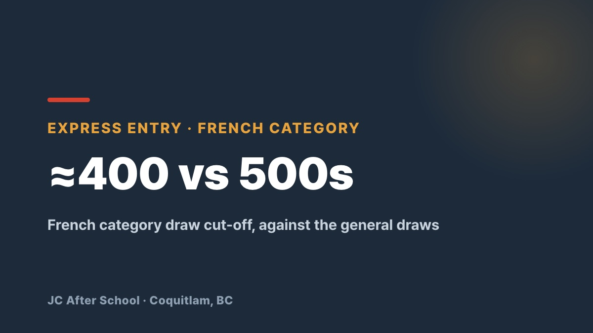

The Usual Route Is Too Slow — French Is the Fastest Shortcut to Canadian PR
JC After School · Coquitlam, BC · May 27, 2026

Is the CRS cut-off for Canadian permanent residence putting PR out of reach?
While general CEC and FSW draws sit in the high 500s, the French-language category draw has been issuing invitations in large volumes at scores in the low 400s — 400 in the April 2026 draw.
Pushing your English up by a fraction of a band is far harder, and far less certain, than reaching a target score in French.
🎯 Why French, and why now?
A dramatically lower cut-off — over 100 CRS points below the general draws
Full government backing — this is the category IRCC is pushing hardest
An advantage if you already have English — shared vocabulary and structure make French far faster to pick up
📊 The target: TCF Canada, NCLC 7 (B2)
To enter the Express Entry French category you need NCLC 7 in every section. We build the route around TCF Canada, which is the most predictable and approachable of the accepted tests, and we prepare you for its specific traps rather than French in the abstract.
💡 What each section actually demands
Listening & reading (compréhension) — surviving the sharp B2/C1 difficulty spike in the back half. Elimination technique, plus focused drilling on numbers, times and liaison. Target: 24–30 correct out of 39.
Speaking (expression orale) — from everyday self-introduction to role-play with a native examiner and giving an opinion on a current issue, with one-on-one feedback.
Writing (production écrite) — practical emails, describing experience, and logically structured essays (topics like remote work or online education), with reusable templates and the connectors you cannot do without: cependant, à mon avis and the rest.
📈 A three-stage roadmap
Stage 1 — build the DELF B1/B2 foundation using Grammaire Progressive and structured grammar work.
Stage 2 — internalise the TCF Canada question patterns and section-specific technique.
Stage 3 — repeated full mock exams and targeted work on weak areas until NCLC 7 is stable, not lucky.
👋 Start now if this is you
You already meet the Express Entry basics (CEC, FSW and so on) but your CRS is just short
You are worn out by English study and want a different way through
You are ready to commit to an intensive push up to B2 (NCLC 7)
Open the door to Canadian PR with French — the most effective immigration strategy available right now.
📞 Registration and enquiries
Classes run small, and they fill early every year. A waiting list is likely, so please get in touch sooner rather than later.